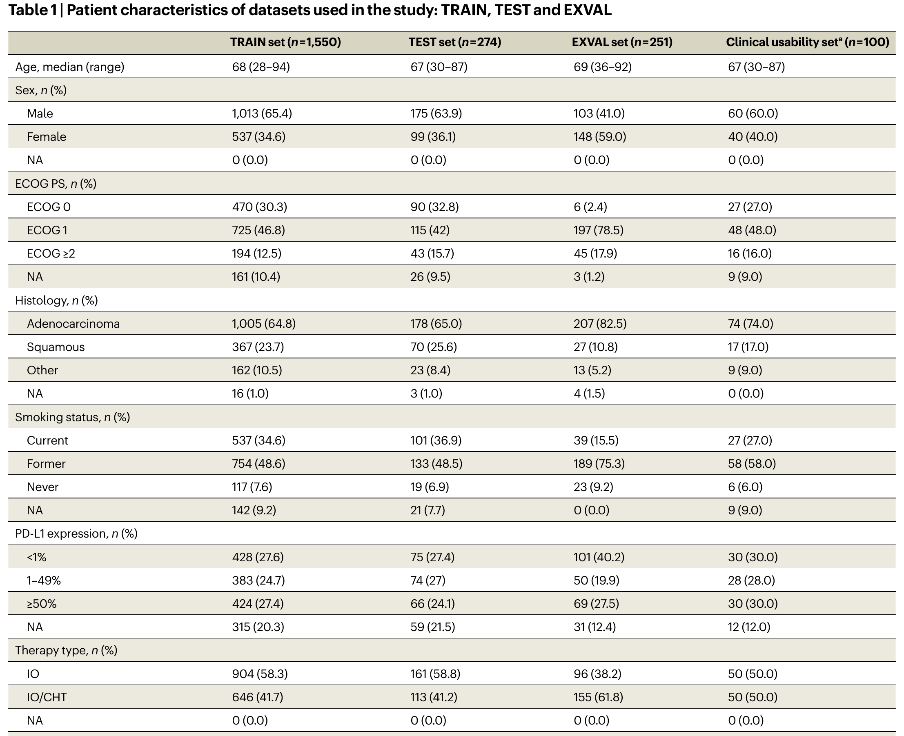

訓練、交叉驗證、測試與外部驗證
白話解釋
把 AI 想成準備考試的學生： - 訓練集：課本與練習題，AI 從這裡學。 - 交叉驗證（CV）：把練習題分成幾份，輪流拿一份當小考。分數常常偏樂觀，因為題型跟課本很像。 - 測試集：模擬考，AI 從沒看過，但出題方式和課本一樣（同幾家醫院）。 - 外部驗證：別的學校出的大考（不同醫院、不同國家的病人），最能看出是不是真的學會。 - Distribution shift（分布轉移）：大考的考生組成和平常不同，分數自然會變。
在這篇論文怎麼用
- 主分析 2,075 人：85% 訓練（1,550 人）、15% 測試（274 人），美國芝加哥大學 251 人當外部驗證 prelaj2026 p.2。
- 交叉驗證以「醫院」為單位輪流，等於每次都考一家沒看過的醫院，比隨機切更嚴格 prelaj2026 p.2。
- 外部驗證的病人很不一樣：體能狀態 ECOG 0 只有 2.4%，訓練集是 30.3% prelaj2026 p.4。
- 外部驗證組的中位存活 22.2 個月，訓練集只有 12.4 個月 prelaj2026 p.2。

相關頁面
AUC 與 C-index、換一家醫院，AI 就變笨了？外部驗證的掉分、資料越多越準？多模態的進步沒有重現、AI 能不能幫醫師判斷誰適合免疫治療？I3LUNG 研究